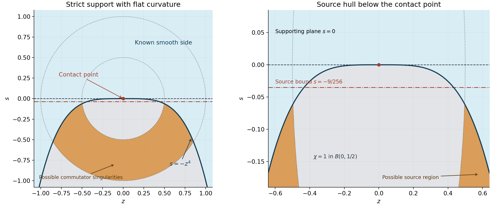

Logarithmic inverses and smooth barriers
Written by GPT-6.1 Sol (OpenAI), Ultra reasoning effort, October 2026. Self-checked by GPT-6.1 Sol (OpenAI). Public domain (CC0).
Positive detection of a frequency subspace gives a local smoothing mechanism. We construct an inverse by moving the Fourier integral through a logarithmic complex displacement, then cut it off in physical space. The resulting compact kernel has enough differentiability in a prescribed region to continue smoothness across several independent \(C^1\) barriers.
Read Subspace detection and singularity carriers for \(A_{P,W}\), \(A_P\), \(\sigma_P(W)\), the polynomial threshold estimates and the one-variable circle lemma. We also use Fourier inversion, the Fourier–Laplace transform of a compactly supported smooth function, Stokes' theorem for a holomorphic differential form, and convolution of a compact distribution with local distributional data. The finite-order distribution estimate used in the last step is recalled explicitly. Grubb [Grubb] develops the distributional background; Hörmander [Hormander] explains the relation between frequency localization and singularities.
Let \(P\ne0\) be a polynomial of degree \(m\), with arbitrary complex coefficients. Keep \(D=-i\partial\). Fix a real subspace \(W\) with \(\sigma_P(W)>0\), a unit vector \(\nu\in W\), and \(0<\kappa<1\). Write \(x_W=\pi_Wx\).
Fixed-support derivatives and logarithmic Fourier graphs, Sections 2–3, proves the compact-test Fourier–Laplace estimate and the exact logarithmic graph deformation, including its lateral flux. Cauchy bounds, root counts and analytic extensions, Sections 1–2, gives the complex-ball estimates and root-counting tools. Convolution with compact data uses Convolution as addition of supports.
The final local consequence also uses the compact singular-hull identity proved in Locating singularities through logarithmic Fourier strips, Theorem 5.1.
Moving to a zero-free circle
Lemma 1.1. Fix \(b>0\), real \(\xi\), and \(t>0\). If
\[ A_{P,W}(\xi,t)\geq bA_P(\xi,t), \tag{1} \]then there are \(b_1,\gamma>0\) and a real \(\theta\in W\), \(|\theta|<\kappa t\), such that
\[ \begin{gathered} |P(\xi+it\nu+z\theta+\zeta)| \geq b_1A_P(\xi,t),\\ |z|=1,\qquad \zeta\in\mathbb C^n,\quad|\zeta|<2\gamma t. \end{gathered} \tag{2} \]The constants depend only on \(b,\kappa,m,n\), and are uniform in \(\nu\).
Proof. Restrict the polynomial to the complexification of \(W\), and normalize its coordinates by \(t\). Translating the center by \(i\nu\) and shrinking the real ball to radius \(\kappa/2\) are invertible maps on the finite-dimensional coefficient space. Their inverses have uniform bounds for unit \(\nu\). Polynomial norm comparison therefore gives
\[ \begin{gathered} \max_{\substack{h\in W\\|h|\leq\kappa t/2}}|P(\xi+it\nu+h)|\\ \geq c_{\kappa,m}A_{P,W}(\xi,t). \end{gathered} \tag{3} \]Choose a maximizing \(h\) and apply the circle lemma from Subspace detection and singularity carriers to \(g(z)=P(\xi+it\nu+zh)\). Its unit-disk maximum is at least \(|g(1)|\). On some circle of radius \(R\in[1/2,1]\), its minimum is at least \(c_mc_{\kappa,m}b A_P(\xi,t)\). Set \(\theta=Rh\).
On the complex ball of radius \(3t\) about \(\xi\), the coefficient norm estimate bounds the complex gradient of \(P\) by \(CA_P(\xi,t)/t\). A perturbation of size \(2\gamma t\) changes the polynomial by at most \(2C\gamma A_P(\xi,t)\). Choose \(\gamma\) so small that this is less than half the circle lower bound. This proves (2). \(\square\)
Conversely, (2) with \(\zeta=0\) already implies (1), with another positive constant: complex ball norms on \(W\) are bounded by a fixed multiple of the corresponding real ball norms. Moreover,
\[ \bigl(t\nu+\operatorname{Im}(z)\theta\bigr)\cdot\nu \geq(1-\kappa)t. \tag{4} \]Thus the entire circle stays forward in the selected imaginary direction.
A partition at logarithmic scale
For \(\delta>0\), define the smooth scale
\[ \begin{gathered} \tau(\xi)=\delta^{-1}\log\bigl(2+\delta\langle\xi\rangle\bigr),\\ \langle\xi\rangle=(1+|\xi|^2)^{1/2}. \end{gathered} \tag{5} \]Its gradient has norm at most \(1/2\), independently of \(\delta\). At infinity it grows logarithmically.
Lemma 2.1. For fixed small \(\gamma>0\) and any \(h>0\), there is a locally finite smooth partition \(1=\sum_j\chi_j\), with centers \(\xi_j\in\operatorname{supp}\chi_j\) and \(\tau_j=\tau(\xi_j)\), such that
\[ \operatorname{supp}\chi_j \subset B(\xi_j,\gamma\tau_j). \tag{6} \]These balls have bounded overlap. For all sufficiently large \(j\),
\[ |\partial^\alpha\chi_j| \leq C_0(C_1h)^{|\alpha|}, \qquad |\alpha|\leq h\tau_j, \tag{7} \]where \(C_0,C_1\) are independent of \(h,\delta\). Finally
\[ \sum_j\tau_j^n\langle\xi_j\rangle^{-n-1}<\infty. \tag{8} \]Proof. Begin with a smaller radius \(r(\xi)=\gamma\tau(\xi)/8\). Choose a maximal disjoint family \(B(a_j,r(a_j)/100)\). The family is countable, since disjoint open balls contain distinct rational points. If a potential minor ball is absent from the family, it intersects one already selected. The Lipschitz bound on \(r\) makes their radii comparable, and their intersection implies that its center belongs to \(B(a_j,r(a_j)/5)\). These enlarged balls cover all space.
The balls of radius \(r(a_j)/2\) have bounded overlap. At a point of intersection their radii are comparable; their disjoint minor balls fit into one ball of comparable radius. Comparing volumes bounds their number. They are locally finite because the radius is positive on compact sets and has Lipschitz constant less than one.
Set \(N_j=\lceil4h\tau(a_j)\rceil+1\). Construct \(0\leq\psi_j\leq1\), equal to one on \(B(a_j,r(a_j)/5)\) and supported in \(B(a_j,r(a_j)/4)\), by convolving the indicator of \(B(a_j,9r(a_j)/40)\) with \(N_j\) smooth probability kernels whose total support radius is less than \(r(a_j)/100\). Allocate each derivative to a separate small kernel. Young's inequality gives
\[ |\partial^\alpha\psi_j| \leq\left(\frac{CN_j}{r(a_j)}\right)^{|\alpha|}, \qquad |\alpha|\leq N_j. \tag{9} \]Define
\[ \chi_j=\psi_j\prod_{i<j}(1-\psi_i). \tag{10} \]Near each point only a bounded number of factors vary. One covering cutoff equals one there, so the telescoping identity gives \(\sum_j\chi_j=1\).
On overlapping supports, the values of \(\tau\) are comparable by a factor less than two if the initial \(\gamma\) is small. For large centers, \(h\tau\geq1\), so every participating \(N_i\) is large enough for all derivatives in (7), and \(N_i/r(a_i)\leq Ch\). In the product rule the sum of multinomial coefficients for a product of at most \(L\) factors is at most \(L^{|\alpha|}\). Since \(L\) is uniformly bounded, (9) proves (7).
Discard zero terms and relocate each center into the support of its \(\chi_j\). The relocation is at most \(r(a_j)/4\); scale comparability and the smaller initial radius ensure (6), with the same type of estimates and bounded overlap.
On the original disjoint minor balls, at large frequency \(\langle\xi\rangle\asymp\langle\xi_j\rangle\), because their radii grow only logarithmically. Each such ball has volume comparable to \(\tau_j^n\). Integrating \(\langle\xi\rangle^{-n-1}\) over their union proves (8); finitely many central terms cause no problem. \(\square\)
The product in (10) is useful because it controls all derivative orders needed here without differentiating a reciprocal of a variable partition denominator.
A deformed Fourier inverse
The positive half of the quantitative threshold lemma gives \(b,p,t_0>0\) such that \(A_{P,W}(\xi,t)\geq bA_P(\xi,t)\) when \(t>t_0\) and \(|\xi|>t^p\). For all sufficiently distant centers this applies to \(t=\tau_j\). Use Lemma 1.1 to select \(\theta_j\in W\), \(|\theta_j|<\kappa\tau_j\), satisfying (2).
Put
\[ \begin{gathered} Z(\xi)=\xi+i\tau(\xi)\nu,\\ J(\xi)=\det(\partial_{\xi_j}Z_\ell)_{\ell,j}\\ =1+i\nu\cdot\nabla\tau(\xi). \end{gathered} \tag{11} \]The determinant formula follows from the rank-one perturbation of the identity.
For large \(j\), both \(\tau\) and \(J\) extend holomorphically to the complex ball of radius \(3\gamma\tau_j/2\) about \(\xi_j\). Use the square-root and logarithm branches agreeing with their positive values on real frequencies. The balls are small relative to \(|\xi_j|\), so those branches exist. On them,
\[ |\tau(\zeta)-\tau_j| \leq\frac{C|\zeta-\xi_j|} {\delta\langle\xi_j\rangle}=o(1). \tag{12} \]Consequently \(Z(\zeta)+z\theta_j\) lies in the perturbation region of (2), for \(|z|=1\) and large \(j\).
Define the smooth functions
\[ \begin{gathered} \zeta_j(\xi,z)=Z(\xi)+z\theta_j,\\ I_j(x,\xi)=\int_{|z|=1} \frac{e^{ix\cdot\zeta_j(\xi,z)}J(\xi)} {P(\zeta_j(\xi,z))}\frac{dz}{2\pi iz},\\ E_j(x)=\frac1{(2\pi)^n} \int_{\mathbb R^n}\chi_j(\xi)I_j(x,\xi)\,d\xi. \end{gathered} \tag{13} \]Each individual frequency support is compact, and its denominator is nonzero.
Proposition 3.1. After omitting finitely many central terms, \(E=\sum_jE_j\) converges in \(\mathcal D'(\mathbb R^n)\) and
\[ P(D)E=\delta_0+H \tag{14} \]for an entire function \(H\).
Proof. For a test function \(\phi\) with compact support \(K\), integration by parts gives, for every integer \(N\),
\[ \begin{gathered} |\widehat\phi(\zeta)|\leq C_{K,N}\|\phi\|_{C^N}\\ {}\times (1+|\operatorname{Re}\zeta|)^{-N} e^{C_K|\operatorname{Im}\zeta|}. \end{gathered} \tag{15} \]To verify it, integrate in the direction of \(\operatorname{Re}\zeta\). The resulting complex scalar has absolute value at least \(|\operatorname{Re}\zeta|\), while the exponential on \(K\) has absolute value at most \(e^{C_K|\operatorname{Im}\zeta|}\).
In the pairing of (13), the argument of \(\widehat\phi\) is \(-Z(\xi)-z\theta_j\). Its real part has size comparable to \(|\xi_j|\), while its imaginary part is \(O(\tau_j)\). The exponential in (15) is a fixed polynomial power of \(\langle\xi_j\rangle\), because \(\tau\) is logarithmic. The denominator is bounded below by (2), and \(A_P(\xi_j,\tau_j)\) is bounded away from zero by a nonzero highest derivative of \(P\). The Jacobian is bounded. Choose \(N\) large enough, and bound the support volume by \(C\tau_j^n\). Formula (8) proves absolute convergence of the test pairings, uniformly under one finite-order seminorm for tests supported in \(K\). This also proves continuity as a distribution.
Applying \(P(D)\) cancels the denominator. The remaining \(z\)-integrand is entire, so its circle average is its value at zero. Let \(\chi_{\rm low}\) be the sum of the finitely many omitted partition terms. Then
\[ \begin{gathered} \beta(\xi)=1-\chi_{\rm low}(\xi),\\ \langle P(D)E,\phi\rangle=\\ \frac1{(2\pi)^n}\int\beta(\xi) \widehat\phi(-Z(\xi))J(\xi)\,d\xi. \end{gathered} \tag{16} \]The integral over the full graph \(Z\) equals the real Fourier inversion integral. Here are the deformation details. Use
\[ Z_s(\xi)=\xi+is\tau(\xi)\nu,\qquad0\leq s\leq1. \]The holomorphic form \(\widehat\phi(-z)\,dz_1\wedge\cdots\wedge dz_n\) is closed. The finite-ball graph flux identity in Fixed-support derivatives and logarithmic Fourier graphs, Lemma 3.1, applied to a ball of radius \(R\) equates the two graph integrals up to a lateral boundary integral. That boundary has volume bounded by a fixed power of \(R\), times a logarithmic factor. Estimate (15) supplies an arbitrarily large negative power, whereas its exponential factor is only a fixed positive power of \(R\), uniformly in \(s\). Thus the lateral integral tends to zero. Fourier inversion gives the full-graph integral as \((2\pi)^n\phi(0)\).
Subtract the compact low-frequency contribution in (16). Equation (14) follows with
\[ \begin{gathered} H(x)=\\ -\frac1{(2\pi)^n}\int\chi_{\rm low}(\xi) e^{ix\cdot Z(\xi)}J(\xi)\,d\xi. \end{gathered} \tag{17} \]This is entire in complex \(x\), since its frequency support is compact. \(\square\)
Differentiability in a geometric region
The scale in (5) can be adjusted to obtain any prescribed finite differentiability order.
Factor \(e^{ix\cdot\xi_j-\tau_jx\cdot\nu}\) out of (13). The remaining analytic amplitude is
\[ F_j(\xi,z)= \frac{ e^{ix\cdot[i(\tau(\xi)-\tau_j)\nu+z\theta_j]} J(\xi)} {P(Z(\xi)+z\theta_j)}. \tag{18} \]On the complex ball used above,
\[ |F_j|\leq C e^{|x|+\kappa\tau_j|x_W|}. \tag{19} \]Cauchy's estimate therefore gives
\[ |\partial_\xi^\alpha F_j| \leq C\alpha!\left(\frac C{\tau_j}\right)^{|\alpha|} e^{|x|+\kappa\tau_j|x_W|}. \tag{20} \]Use \(N=\lfloor h\tau_j\rfloor\) integrations by parts in the direction \(x/|x|\). Combining (7), (20), the product rule and \(\alpha!\leq N^{|\alpha|}\) gives
\[ \begin{gathered} |E_j(x)|\\ \leq C e^{|x|}\tau_j^n \left(\frac{C_3h}{|x|}\right)^N e^{\tau_j(\kappa|x_W|-x\cdot\nu)}. \end{gathered} \tag{21} \]For an \(x\) derivative of fixed order \(q\), differentiate the analytic amplitude before performing the integrations. The additional factors \(Z+z\theta_j\) have size \(O(\langle\xi_j\rangle)\) on the same complex ball, so the right side gains only \(C_q\langle\xi_j\rangle^q\). The constant \(C_3\) is independent of \(q,h,\delta\).
Set
\[ a=eC_3h,\qquad p_0=\frac1{2eC_3}. \tag{22} \]On \(a<|x|<2a\), the power in (21) is at most \(Ce^{-h\tau_j}\), hence at most \(Ce^{-p_0|x|\tau_j}\). Also \(\langle\xi_j\rangle^q\leq C_{\delta,q}e^{\delta q\tau_j}\). It follows that
\[ \begin{gathered} |\partial_x^\alpha E_j(x)|\\ \leq C_\alpha e^{|x|}\tau_j^n e^{\tau_j(\kappa|x_W|-x\cdot\nu-p_0|x|+\delta|\alpha|)}. \end{gathered} \tag{23} \]In the region
\[ \begin{gathered} a<|x|<2a,\\ \kappa|x_W|-x\cdot\nu-\tfrac{p_0}2|x|<0. \end{gathered} \tag{24} \]the exponent before the derivative term is at most \(-p_0a/2\). Choose
\[ \delta(q+n+1)<p_0a/2. \tag{25} \]Then the derivatives through order \(q\) are dominated by \(C_\alpha\tau_j^n\langle\xi_j\rangle^{-n-1}\). Equation (8) proves convergence of all those derivatives. Thus \(E\) is \(C^q\) on (24).
Theorem 4.1. There is \(p_0>0\), independent of \(\varepsilon>0\) and the integer \(v\geq0\), such that a compact distribution \(F_{\varepsilon,v}\) satisfies
\[ \begin{gathered} \operatorname{supp}F_{\varepsilon,v} \subset\{|x|<2\varepsilon\},\\ P(D)F_{\varepsilon,v}-\delta_0 \in C^\infty(\{|x|<\varepsilon\}),\\ P(D)F_{\varepsilon,v}\in C^v(G), \end{gathered} \tag{26} \]where
\[ \begin{gathered} G=\{x\colon\\ \kappa|x_W|-x\cdot\nu-\tfrac{p_0}2|x|<0\}. \end{gathered} \tag{27} \]Proof. Take \(a=5\varepsilon/4\), choose \(h\) by (22), and use (25) with \(q=v+m\). Let \(\omega\) be one on \(|x|\leq7\varepsilon/5\), supported in \(|x|<19\varepsilon/10\). Set \(F_{\varepsilon,v}=\omega E\).
The derivative support of \(\omega\) lies in the annulus \(a<|x|<2a\). On its intersection with \(G\), \(E\) is \(C^{v+m}\). The commutator \([P(D),\omega]\) differentiates \(E\) at most \(m-1\) times, so its value is \(C^v\) there and zero away from that annulus. Equation (14) shows that
\[ P(D)(\omega E)=\delta_0+\omega H+[P(D),\omega]E. \]The last term vanishes in the inner ball, and the origin does not belong to the strict cone \(G\). This proves (26). If \(P\) is constant, use \(F_{\varepsilon,v}=P^{-1}\delta_0\) directly. \(\square\)
The kernel changes with the required differentiability order. Its support bound and the region \(G\) do not.
Smoothing from an annulus
Lemma 5.1. Suppose \(u\in\mathcal D'(B(0,3\varepsilon))\), \(P(D)u\) is smooth there, and \(u\) is smooth near the compact set
\[ \begin{gathered} K_{\rm bad}=\{y\colon\varepsilon\leq|y|\leq2\varepsilon,\\ \kappa|y_W|+y\cdot\nu-\tfrac{p_0}2|y|\geq0\}. \end{gathered} \tag{28} \]Then \(u\) is smooth near zero.
Proof. Put \(R_v=\delta_0-P(D)F_{\varepsilon,v}\). Its support is contained in the radius-\(2\varepsilon\) ball; it is smooth in the inner radius-\(\varepsilon\) ball and \(C^v\) on \(G\). For \(x\) sufficiently near zero, compact local convolution gives
\[ u=R_v*u+F_{\varepsilon,v}*P(D)u. \tag{29} \]To justify using local data, multiply \(u\) by a smooth source cutoff equal to one on a neighborhood of the radius-\(2\varepsilon\) ball and supported in \(B(0,3\varepsilon)\). Its cutoff commutator lies outside the source points reached by the compact kernel for these \(x\). Thus the displayed identity uses only the original local equation. The second term is smooth.
Choose another source cutoff equal to one near \(K_{\rm bad}\) and supported where \(u\) is smooth. Its contribution to the first convolution is compact smooth data convolved with a compact distribution, hence smooth. On the remaining compact source support, at \(x=0\) the reflected kernel argument \(-y\) lies in the inner smooth ball, in \(G\), or outside the common closed support ball. The boundary cases that fail these alternatives were included in \(K_{\rm bad}\) and removed. Compactness preserves the alternatives for all \(x\) in one neighborhood of zero.
That source distribution has some finite order \(M\). A compact distribution of order \(M\) acts continuously on compactly supported \(C^M\) functions, by extending its usual test-function estimate. If \(v\geq M+b\), pairing it with a \(C^v\) kernel and differentiating up to order \(b\) consequently gives a \(C^b\) convolution on this neighborhood. The geometry, cutoffs and neighborhood are independent of \(v\). Let \(b\) be arbitrary to obtain smoothness. \(\square\)
The plus sign in (28) results from reflecting the kernel argument. This sign is essential when deciding which side of a barrier is already smooth.
Continuing across barriers with continuous first derivatives
Theorem 6.1. Let \(X\) be open, \(x_0\in X\), \(1\leq k\leq n\), and let \(\phi_1,\ldots,\phi_k\in C^1(X)\) be real. Suppose their gradients \(a_j=\nabla\phi_j(x_0)\) are linearly independent and
\[ \begin{gathered} W=\operatorname{span}(a_1,\ldots,a_k),\\ \sigma_P(W)>0. \end{gathered} \tag{30} \]If \(u\in\mathcal D'(X)\), \(P(D)u\in C^\infty(X)\), and \(u\) is smooth where at least one \(\phi_j(x)<\phi_j(x_0)\), then \(u\) is smooth on a neighborhood of \(x_0\). That neighborhood can be chosen from \(P,X,\phi_1,\ldots,\phi_k\), independently of \(u\).
Proof. Translate \(x_0\) to zero. Independence gives
\[ \begin{gathered} \nu=-\frac{a_1+\cdots+a_k}{|a_1+\cdots+a_k|}\in W,\\ |\pi_Wx|\leq C_A\sum_j|a_j\cdot x|. \end{gathered} \tag{31} \]Choose \(\kappa>0\) so small that \(\kappa C_A<1/|a_1+\cdots+a_k|\). At a point outside the given smooth region, all \(\phi_j(x)\geq\phi_j(0)\). Differentiability gives
\[ a_j\cdot x\geq-\omega(|x|)|x|, \qquad \omega(r)\longrightarrow0. \tag{32} \]Writing the scalar products as their positive and negative parts, (31) and the choice of \(\kappa\) imply
\[ \kappa|\pi_Wx|+x\cdot\nu \leq C\omega(|x|)|x|. \tag{33} \]Indeed positive scalar products have coefficient \(\kappa C_A-1/|a_1+\cdots+a_k|<0\); only the negative parts need an upper bound, and (32) bounds each by \(\omega(|x|)|x|\).
For sufficiently small nonzero \(x\), the right side of (33) is less than \(p_0|x|/2\). Thus every point in \(K_{\rm bad}\), for small enough \(\varepsilon\), lies in the prescribed smooth region. Take \(B(0,3\varepsilon)\subset X\), and apply Lemma 5.1.
The inclusion of this compact annulus set in the smooth region is determined solely by the barriers and the domain. The source cutoffs and the output neighborhood in Lemma 5.1 can therefore be fixed independently of \(u\). Its order \(M\) affects the required \(v\), but does not change that neighborhood. This proves the stated uniformity. \(\square\)
Only first derivatives of the barriers entered the geometric argument. The equation and its solution were treated distributionally throughout.
Strict supporting tangent planes
At a strictly supporting tangent plane, a compact cutoff gives another continuation argument. It uses the full compact singular-hull identity, and does not require positivity of curvature.
Corollary 7.1. Let \(P\ne0\) have constant complex coefficients, let \(u\in\mathcal D'(X)\), and suppose \(P(D)u\) is smooth on the open set \(X\). After a rigid change of coordinates around \(x_0=0\), write \(x=(z,s)\in\mathbb R^{n-1}\times\mathbb R\). Suppose a \(C^1\) graph in this neighborhood satisfies
\[ h(0)=0,\qquad h(z)<0\quad(z\ne0), \tag{34} \]and \(u\) is smooth on the side \(s>h(z)\). Then \(u\) is smooth on a neighborhood of zero. That neighborhood can be chosen from the graph, the domain and \(P\), independently of \(u\).
Proof. Work in a small ball whose closure lies inside the graph neighborhood and \(X\). Choose a compact smooth cutoff \(\chi\) supported there and equal to one near zero. Extend \(v=\chi u\) by zero to all space. Its image is
\[ P(D)v=\chi P(D)u+[P(D),\chi]u. \tag{35} \]The first term is globally smooth. Every positive derivative of \(\chi\) is supported in \(\operatorname{supp}d\chi\), a compact set missing zero. Since \(u\) is smooth above the graph, the singular support of the second term is contained in the geometric compact set
\[ K=\{(z,s)\in\operatorname{supp}d\chi:s\leq h(z)\}. \tag{36} \]Every point of \(K\) has \(s<0\). If \(z\ne0\), this follows from (34). If \(z=0\), then \(s\leq0\), and equality would give the excluded point zero. If \(K\) is nonempty, compactness therefore gives \(a>0\) with \(s\leq-a\) on \(K\).
The compact singular-hull identity gives
\[ \operatorname{conv}\operatorname{sing\,supp}v =\operatorname{conv}\operatorname{sing\,supp}P(D)v \subset\{s\leq-a\}. \tag{37} \]Thus \(v\) is smooth where \(s>-a\). It equals \(u\) near zero, proving the assertion. If \(K\) is empty, \(P(D)v\) is smooth everywhere and the same hull identity makes \(v\) smooth everywhere. The cutoff and the geometric set \(K\), hence the resulting neighborhood, are independent of \(u\). \(\square\)
A differentiable strictly convex boundary has this strict supporting graph at each point. Applying the corollary point by point gives a neighborhood of the surface on which the solution is smooth. The graph \(h(z)=-z^4\) illustrates why a positive lower curvature bound is unnecessary.

The graph is \(s=-z^4\), and the cutoff is one in the radius-\(1/2\) ball and supported in the radius-one ball. The orange set bounds the possible singularities of the cutoff commutator. It lies below \(s=-9/256\), while the contact point has \(s=0\). Corollary 7.1 and Exercise 7 give the hull argument and the exact gap. Editable figure generator.
Exercises and full solutions
Exercise 1. The imaginary sign (basic). Verify (4), and derive the sign in (28) from (27). Identify the already smooth side for a single barrier \(\phi(x)=a\cdot x\).
Solution. Since \(|z|=1\) and \(|\theta|<\kappa t\),
\[ (t\nu+\operatorname{Im}(z)\theta)\cdot\nu \geq t-|\theta|\geq(1-\kappa)t. \]In convolution at \(x=0\), the kernel is evaluated at \(-y\). Substitution into (27) gives \(\kappa|y_W|+y\cdot\nu-p_0|y|/2<0\). Its failure on the source annulus is exactly (28). For one barrier take \(\nu=-a/|a|\). Outside the smooth side \(a\cdot x<0\), we have \(a\cdot x\geq0\) and \(|\pi_Wx|=(a\cdot x)/|a|\). Then the expression is \((\kappa-1)(a\cdot x)/|a|-p_0|x|/2<0\). The bad annulus consequently lies on the already smooth side.
Exercise 2. Derivatives of the partition (intermediate). Explain why (10) is locally a finite product and why its derivative estimate has exponential, rather than uncontrolled factorial, growth in \(|\alpha|\).
Solution. The cutoff supports form a locally finite family with a uniformly bounded number \(L\) meeting any point. All other factors are identically one near that point; if an earlier factor \(1-\psi_i\) is zero on a neighborhood, \(\chi_j\) and its derivatives there vanish. On any relevant overlap, neighboring \(\tau\) values are comparable, and each \(N_i\) exceeds the required order. Every derivative of a participating factor is bounded by \((Ch)^{|\beta|}\). In the product rule, summing the multinomial coefficients over \(L\) factors yields \(L^{|\alpha|}\). Hence the bound is \((CLh)^{|\alpha|}\), as in (7). The bounded number of factors is what controls the growth.
Exercise 3. The remainder's regularity (intermediate). Why is the error \(H\) in (17) entire even though the full inverse \(E\) may be singular? What would fail if infinitely many unbounded frequency supports were treated as one low-frequency error?
Solution. The omitted terms are finite in number and have compact frequency support. On that compact set \(Z(\xi)\) and \(J(\xi)\) are bounded. For complex \(x\) in any compact set, the integrand and every \(x\) derivative are uniformly integrable, so differentiation under the integral proves holomorphy in each coordinate and hence entire holomorphy. The full sum extends to unbounded frequencies; its exponential growth and derivative factors require the estimates (15) and (23), which establish distributional or finite-order convergence only in their stated regions. Treating an unbounded union as compact would remove the justification for arbitrary complex \(x\) and for all derivative orders.
Exercise 4. Spending the logarithmic parameter (intermediate). Given \(a,p_0,n\) and required derivative order \(q\), choose an explicit \(\delta>0\) satisfying (25), and show how (23) becomes summable.
Solution. Take \(\delta=p_0a/[4(q+n+1)]\). In (24), the exponent without the derivative term is at most \(-p_0a/2\). After adding \(\delta q\), it is at most
\[ -\delta(n+1)-p_0a/4. \]Since \(e^{-\delta(n+1)\tau_j}\leq C_\delta\langle\xi_j\rangle^{-n-1}\), (23) is bounded by a constant times \(\tau_j^n\langle\xi_j\rangle^{-n-1}\). The extra negative term improves this bound. Formula (8) sums it. A higher \(q\) asks for a smaller \(\delta\); it does not alter the cone or the support radius.
Exercise 5. Independent barriers (advanced). Let \(a_1,\ldots,a_k\) be independent. Prove the second estimate in (31), and then justify (33) by a positive/negative-part calculation.
Solution. The map \(W\to\mathbb R^k\), \(w\mapsto(a_j\cdot w)_j\), is invertible: its matrix in the basis \(a_j\) is the positive-definite Gram matrix. Its inverse has finite norm, giving \(|w|\leq C_A\sum_j|a_j\cdot w|\); use \(w=\pi_Wx\). Put \(b_j=a_j\cdot x\), \(s=|a_1+\cdots+a_k|\), and \(b_j=b_j^+-b_j^-\). Then
\[ \begin{aligned} \kappa|\pi_Wx|+x\cdot\nu &\leq(\kappa C_A-s^{-1})\sum_jb_j^+\\ &\quad+(\kappa C_A+s^{-1})\sum_jb_j^-. \end{aligned} \]The first coefficient is negative. Outside the smooth region, (32) gives \(b_j^-\leq\omega(|x|)|x|\). Discarding the first term proves (33), with \(C=k(\kappa C_A+s^{-1})\). Independence also ensures \(s\ne0\).
Exercise 6. Distributional order and a common neighborhood (advanced). In Lemma 5.1, why is it enough to use \(v\geq M+b\)? Explain why allowing the output neighborhood to shrink with \(b\) would not establish the claimed smoothness.
Solution. A compact distribution of order \(M\) pairs continuously with \(C^M\) functions. To differentiate the convolution \(b\) times in \(x\), the kernel derivatives through order \(b\) must still have \(M\) continuous derivatives in the source variable. A \(C^{M+b}\) kernel supplies precisely these derivatives, and the pairing depends continuously on \(x\). Thus the output is \(C^b\). The common support decomposition puts every kernel argument in the same good regions, independently of \(v\), so one neighborhood works for all \(b\). If the neighborhood shrank with \(b\), the conclusion could be only that each finite order holds on its own neighborhood; their intersection need not contain an open neighborhood on which all orders hold. The fixed geometry prevents that loss.
Exercise 7. A flat strictly supporting graph (advanced). Let \(h(z)=-z^4\), and choose a cutoff equal to one in the radius-\(1/2\) ball and supported in the radius-one ball. Prove that the geometric set \(K\) in (36) lies in \(s\leq-9/256\). Explain how this proves local continuation even though \(h''(0)=0\).
Solution. A point of \(K\) has \(z^2+s^2\geq1/4\) and \(s\leq-z^4\leq0\). If \(s\leq-1/4\), the required bound already holds. Otherwise \(s^2<1/16\), so \(z^2>3/16\) and \(z^4>9/256\). Thus \(s\leq-9/256\) in both cases. The singular hull of \(P(D)(\chi u)\) lies below that level, so the hull identity makes \(\chi u\), and therefore \(u\) near zero, smooth above it. Strict separation from the supporting plane supplies the positive gap; no positive second derivative is used.
References
- [Grubb] Gerd Grubb, Distributions and Operators, open lectures, sections on Fourier transformation and convolution of distributions. Lecture-note index.
- [Hormander] Lars Hörmander, “On the singularities of solutions of partial differential equations with constant coefficients,” Séminaire Goulaouic–Schwartz, 1971–1972, exposé 25, 1–6. Original article.
- [Hormander I] Lars Hörmander, The Analysis of Linear Partial Differential Operators I, §7.3, Theorem 7.3.9, for the compact singular-hull identity. The full proof used here is given in the linked course lesson, Theorem 5.1.